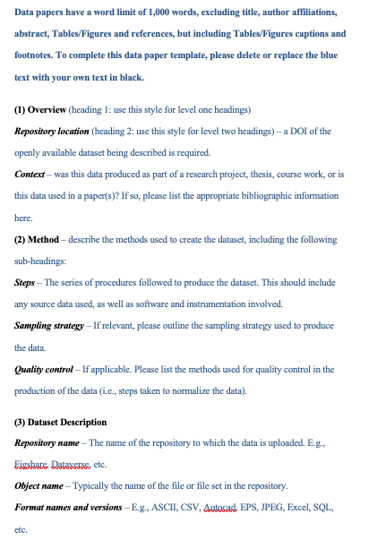

Publier un data paper
1. Définition et enjeux du DP
Le data paper (DP) est une publication scientifique dont le but principal est de décrire un ensemble de données ou un groupe d’ensembles de données, pltutôt que de rendre compte d’une enquête de recherche. Vous allez vraiment décrire votre base ou jeu de données. Cela va constituer l’intégralité de votre article. Un type d’article scientifique tout aussi valable que d’autres. C’est juste une partie “matériel et méthodes” très élaborée de vos articles habituels. Le DP fait directement référence aux données : dedans il y a un lien vers les données. C’est une publication à part entière, qui fait l’objet d’un processus d’évaluation comme tout article dans une revue scientifique.
“Publication qui décrit un jeu de données scientifiques, notamment à l’aide d’informations structurées appelées métadonnées. Contrairement aux articles de recherches classiques, les data papers fournissent une voie formalisée au partage des données plutôt que tester des hypothèses ou présenter de nouvelles analyses” (Doranum 2017)
“Article scientifique évalué par les pairs et citable. Il décrit un jeu de données, la méthode ayant permis de l’obtenir et le potentiel de réutilisation de ce jeu” (Dedieu 2022).
2. Les revues qui publient des DP
Les DP sont reconnus tout comme des articles de recherches traditionnels, et sont indexés par Web of Knowledge (ISI), PubMedCentral, Scopus, Zoological Record, Google Scholar, CAB Abstrats, Directory of Open Access Journal (DOAJ), EBSCO.
Même si l’offre de revue permettant de publier des data paper est limitée, plusieurs le permettent, quelques exemple : Data in Brief, Nature Scientific Data, Journal of Open Humanities Data, Research Data Journal for the Humanities and Social Sciences, F1000 Research, etc.
Mais toutes les revues ne se valent pas. Le CIRAD propose de considérer certains aspects (dedieu2022a?) :
Prendre en compte l’échelle du jeu de données : est-ce un grand ou petit jeu ?
Structure du data paper : est-ce un modèle simple dans une revue généraliste, ou disciplinaire ?
Localisation des données : est-ce que les données ont été déposées dans un entrepôt reconnu par la revue ? Il faut fuir les revues qui captent les données.
Modalités de diffusion des données : certaines revues imposent une licence de diffusion spécifique.
Critères d’évaluation par les pairs : voir les instructions aux auteurs.
3. Construction d’un DP : les spécificités
La structure générale d’un data paper est la suivante :
Description du jeu de données et de son contexte
Description des méthodes d’obtention
Explication du potentiel de réutilisation des données
Les structures du data paper peuvent varier en fonction de la revue, certaines proposent des templates comme Data in Brief, Scientific Data ou Journal of Open Humanities Data.
4. Quels intérêts d’un data paper ?
Tableau 9. Avantages collectifs et individuels à la publication d’un data paper
| Avantages collectifs | Avantages individuels |
|---|---|
| Partage sous forme de publication, avec révision avec les pairs : La publication d’un jeu de données, assortie d’une révision par les pairs, garantit et valorise la qualité des données. Cette démarche vise à assurer que les données sont fiables et ont été examinées rigoureusement par d’autres experts dans le domaine. |
|
5. Quelques exemples de templates
Les revues spécialisées dans la publication de data papers imposent souvent des formats spécifiques et des règles détaillées pour la soumission de ces types de documents. Ces formats sont conçus pour guider les auteurs à travers un ensemble complet de questions que tout data paper devrait adresser, assurant ainsi que toutes les informations essentielles sont couvertes. Cela inclut des détails sur le fonctionnement du jeu de données, sa construction, et ses applications potentielles. En suivant ces directives, les auteurs peuvent créer des data papers qui non seulement répondent aux critères de la revue mais offrent également aux lecteurs une compréhension claire et approfondie des données présentées. Ce processus aide à garantir que les jeux de données sont non seulement accessibles mais également utilisables et pertinents pour d’autres chercheurs dans le domaine.
5.1. Data in Brief
Data in Brief est une revue généraliste qui publie des articles en anglais. Pour soumettre un article, les auteurs peuvent choisir entre deux formats de template disponibles : un document Microsoft Word (.doc) ou un fichier LaTeX. Ces templates sont conçus pour guider les auteurs à travers le processus de rédaction en incluant plusieurs éléments clés :
Parties à remplir : Chaque section du template est destinée à être complétée avec les informations spécifiques du jeu de données.
Des énoncés et explications : Les instructions sur ce qui est attendu dans chaque section sont généralement écrites en bleu. Cela permet de les distinguer clairement du reste du texte, aidant les auteurs à comprendre précisément ce qu’ils doivent fournir.
Des “Commentaires” : Ces annotations supplémentaires clarifient davantage les attentes de la revue pour chaque partie du document. Elles peuvent aussi inclure des recommandations de sources ou des conseils pour aider à compléter certaines sections efficacement.
Ces outils sont conçus pour faciliter le processus de soumission en s’assurant que tous les aspects essentiels des données sont correctement documentés et présentés, permettant ainsi une évaluation rigoureuse et une publication efficace.
Template DIB v.18 (Janvier 2024)
Tableau 10 - Template DIB v.18 (Janvier 2024)
| 13 parties | Contenu |
| Author instructions | Donne un résumé de comment s’approprier ce template : dans sa rédaction comme après pour sa soumission. |
| Article information |
|
| Specifications table | Consiste en un tableau :
|
| Value of the data | Proposer entre 3 et 6 bullet points qui répondent à une question chacune, par exemple :
|
| Background | Décrire ici la motivation, la problématique, le contexte précis qui nous a poussé vers la construction de ce jeu de données. |
| Data description | Décrire le jeu de données dans l’entrepôt : les noms des fichiers, les dossiers, comment se l’approprier… Aucune interprétation ou conclusion sur les données. |
| Experimental design, materials and methods | Décrire comment les données ont été produites et acquises. Description de toutes les étapes. Aucune interprétation ou conclusion sur les données. |
| Limitations | Décrire toute limites liées à ces données (à leur construction ou à ce qu’elles peuvent dire). |
| Ethics statement | DIB propose des textes en fonction de la situation dans laquelle nous somme (si ce travail implique des expérimentations animales par exemple, des données collectées dans les réseaux sociaux, etc…). Ce texte correspond à la charte Elsevier. |
| Credit Author Statement | Attribuer les contributions de chaque auteur, selon la charte Elsevier. |
| Acknowledgements | Mentionner ici les chercheurs qui ont contribué mais qui ne sont pas auteurs. Mentionner également les sources de financements s’il y en a. Phrase toute faite si ce travail n’est pas issu d’un financement particulier. |
| Declaration of competing interests | Choix entre deux phrases toutes faites. |
| References | Maximum de 20 références. Un format précis de mise en forme est demandé : numéroter les références entre crochets. Citer également : son jeu de données, et l’article de recherche qui se base sur ces données s’il y en a un. |
5.2. Scientific Report (Nature)
Revue prestigieuse de portée généraliste qui publie des articles en anglais. Pour faciliter la soumission des manuscrits, la revue met à disposition deux modèles de document, ou templates, que les auteurs peuvent utiliser selon leur préférence : l’un au format Microsoft Word (.doc) et l’autre au format LaTeX. Ces templates sont conçus pour aider les auteurs à structurer leur soumission conformément aux exigences éditoriales de la revue, assurant ainsi que tous les aspects nécessaires sont correctement adressés et présentés.
Template Scientific Data (Nature) (avril 2024)
Tableau 11. Template de Nature Scientific Data
| 16 parties | Contenu |
| Title | 110 caractères max, avec espaces. |
| Authors | Noms avec institution et adresse mail. |
| Abstract | max 170 mots. |
| Background & Summary | Contexte de la construction de ces données, les objectifs qui l’ont motivé, et leur potentiel, qu’est-ce que cela peut apporter. Recommandation : encouragent à inclure une figure qui donne un aperçu schématique de la conception de l’étude ou du flux de travail (le cas échéant). |
| Methods | Décrit toutes les étapes ou procédures utilisées pour produire ces données. Cette description doit être suffisamment détaillée pour permettre aux lecteurs de reproduire les méthodes des publications associées à partir de cette explication. Aucune limite de taille. |
| Data Records | Description détaillée d’où les données se trouvent et de comment s’approprier les données dans leur entrepôt. |
| Technical Validation | Toute expérience ou analyse nécessaire pour valider la qualité technique du jeu de données. Figures ou tableau si besoin. |
| Usage Notes | Section optionnelle. Instructions supplémentaires pour assister les chercheurs à la réutilisation de ces données. |
| Code Availability | Optionnel si on utilise un code d’usage. Indique si et comment le code peut être accessible. |
| Acknowledgments | Pas de charte de référence. |
| Author contributions | Suivre la référence de la revue Nature (autorship policies). |
| Competing interests | Regarder les politiques de Nature sur ce qui constitue des intérêts concurrents. |
| Figures | Les images des figures doivent être fournies sous forme de fichiers séparés et doivent être référencées à l’aide d’un système de numérotation cohérent dans l’ensemble du descripteur de données. Pour les soumissions initiales, les auteurs peuvent choisir de fournir un seul PDF avec des figures intégrées. Il vous sera ensuite demandé de fournir des fichiers séparés à l’approche de la publication. Les auteurs sont encouragés à envisager la création d’une figure décrivant le(s) processus expérimental(s) utilisé(s) pour générer et analyser les données. |
| Figure Legends | Les tableaux doivent être fournis dans un document Word dans un fichier séparé. Les tableaux peuvent être de n’importe quelle taille, mais seuls les tableaux qui tiennent sur une seule page imprimée seront inclus dans la version PDF de l’article (jusqu’à un maximum de trois). Les autres seront hébergés en tant que tableaux supplémentaires. |
| Tables | |
| References | Utiliser les standards de Nature. Citer nos données. |
5.3. Journal of Open Humanities Data (JOHD)
Revue thématique spécialisée dans les données ouvertes en sciences humaines. Cette revue a une exigence particulière concernant la longueur des soumissions : les articles ne doivent pas dépasser 1000 mots, à l’exception du titre, des affiliations des auteurs, du résumé, ainsi que des tables, figures et références qui ne sont pas inclus dans ce comptage. Le template fourni par la revue contient du texte en bleu qui sert de guide et doit être supprimé ou remplacé par le texte définitif de l’auteur, en noir. Ce système aide les auteurs à structurer leur article de manière claire et conforme aux attentes éditoriales de la revue.
Template JOHD, short (avril 2024)

Tableau 12. Template de JOHD
| 12 parties | Contenu |
| Title | Noms des auteurs et affiliations. |
| Author roles | Selon la charte : https://credit.niso.org/ |
| Abstract | Résumé d’environ 100 mots, accompagnés de mots-clés. |
| Overview |
|
| Method | Décrire les méthodes utilisées pour créer les données, y compris les sous parties :
|
| Dataset Description |
|
| Reuse Potentiel | Décrire les façons dont les données peuvent être réutilisées par d’autres chercheurs. |
| Acknowledgments | Pas de charte précise. |
| Funding statement | Pas de charte précise. |
| Competing interests | Si aucun intérêt écrire “The author(s) has/have no competing interests to declare”. |
| References | APA style et inclure DOI si valables. |
| Supplementary Files | Tous les fichiers supplémentaires/complémentaires qui doivent être liés à la publication principale doivent être listés, avec un numéro correspondant, un titre et une description de l’option. Les fichiers supplémentaires doivent également être cités dans le texte principal. |
6. La question du coût d’un data paper
6.1. Le principe de l’auteur-payeur : coûts élevés
Les publications de data paper reposent sur le modèle de l’ “auteur-payeur”, principe selon lequel les auteurs ou leurs institutions financent les frais de publication afin de rendre leurs travaux librement accessibles au public. Ce modèle est souvent associé aux revues dites en “Gold Open Access” (voies dorées).
Plusieurs contraintes accompagnent ce modèle :
Coûts élevés de publication : Les frais de publication, connus sous le nom d’Article Processing Charges (APC), peuvent être prohibitifs, allant de quelques centaines à plusieurs milliers d’euros par article. Cette barrière financière peut limiter la capacité des chercheurs, surtout ceux provenant d’institutions avec des ressources limitées ou des pays à faible revenu, à publier leurs travaux.
Inégal accès à la publication : L’accès inégal aux ressources financières peut désavantager certains chercheurs, affectant ainsi la visibilité et l’impact de leurs recherches en fonction de leur capacité à supporter ces coûts.
Impact sur la qualité de la recherche : Une vigilance accrue est nécessaire concernant les revues ‘prédatrices’, qui peuvent favoriser les bénéfices financiers au détriment de la rigueur scientifique.
Alternatives limitées : Bien que des alternatives comme la publication dans des revues sans APC (voie diamant) existent, elles sont moins nombreuses et peuvent offrir une visibilité moindre pour les travaux publiés.
6.2. Quelques solutions existantes
Des solutions diverses voient le jour :
Dans le contexte français, le consortium Couperin est une association d’établissements de l’Enseignement Supérieur et de la Recherche français visant à développer l’accès à l’information scientifique et technique pour la communauté scientifique. Il facilite les négociations nationales de ressources documentaires numériques, notamment avec les grands groupes d’éditions américains, et soutient la science ouverte. Le consortium évalue, négocie et organise l’achat de ressources documentaires numériques au bénéfice de ses membres. Le consortium négocie des accords avec les éditeurs pour réduire les frais de publication en Open Access pour ses membres, qui incluent des universités, grandes écoles, et autres institutions de recherche françaises. Ces accords visent à obtenir des conditions tarifaires avantageuses et parfois même des dispenses complètes sur les APC (Article Processing Charges). Ces négociations permettent de soutenir la science ouverte en réduisant la barrière financière pour les chercheurs.
Accords avec des éditeurs (‘open access agreements’) : certains éditeurs ont des arrangements spécifiques avec des pays ou des institutions pour réduire les APC. Ces accords peuvent varier considéablement d’un pays à l’autre et d’un éditeur à l’autre, souvent négociés à l’échelle institutionnelle ou nationale. Par exemple, divers éditeurs ont mis en place des accords transformants qui visent à transitionner du modèle d’abonnement traditionnel à un modèle de libre accès, souvent en réduisant ou en couvrant les APC pour les institutions participantes.
Tableau 13. Open Access Agreements par revue
Data in Brief (Politique d’Elsevier 1 ; 2) : 850$ brut Nature Scientific Data (Politique de Springer 1 ; 2) : 2290$ brut Journal Of Humanities Data (Politique Ubiquity Press) : 730$ [1] Europe : Consortiums nationaux majeurs en Autriche, Bulgarie, Danemark, Finlande, France, Allemagne, Grèce, Hongrie, Italie, Malte, Pays-Bas, Norvège, Pologne, Portugal, Roumanie, Slovaquie, Slovénie, Espagne, Suède, et Suisse (incluant CERN et Swiss Universities).
Amérique du Nord : Nombreux établissements et consortiums aux États-Unis, incluant California State University, Carnegie Mellon University, et University of California ; Canada représenté par le Canadian Research Knowledge Network (CRKN)
Océanie : Australie ; Nouvelle-Zélande
Asie : Japon.; Corée du Sud ; Taiwan ; Inde ; Indonésie ; Qatar ; Arabie Saoudite ; Singapour ; Thaïlande
Amérique latine : Colombie et Brésil
Afrique : Afrique du Sud avec le SANLiC Consortium
Pays classés “à faibles revenus” selon la Banque Mondiale sont dispensés d’APC : concerne en majorité des pays d’Afrique (Madagascar, Burundi, Burkina Faso…) à l’exception de l’Ukraine depuis l’invasion de la Russie.
Pays à “faible-moyen revenus” avec un PIB en dessous des 200$ bénéficient d’une réduction d’APC de 50% : concerne notamment la Côte d’Ivoire, le Sénégal, ou encore le Maroc.
Les autres sont évalués au cas par cas.
Un des prix les plus bas pour les revues.
Pas d’aide ou de dispense d’APC dans ce contexte.